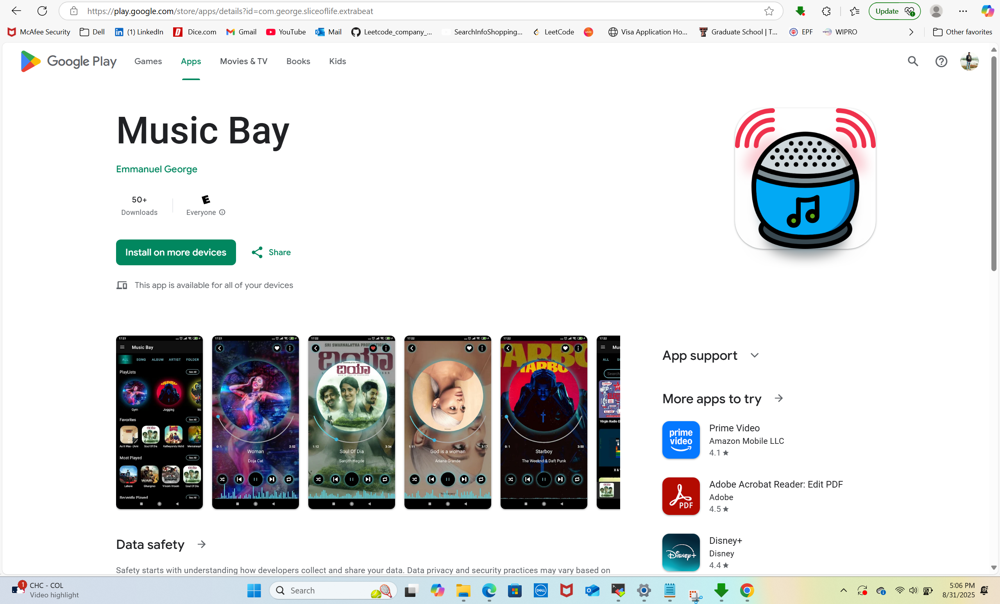

Building scalable applications with a passion for beautiful and functional user experiences.
Java/Android Developer who focuses on writing clean, elegant and efficient code.
"The path of the just is like the shining sun, that shines ever brighter." - Proverbs 4:18
I am a Software Engineer with over 6 years of experience, originally from Karnataka, India. I am currently based in Raleigh, North Carolina, where I work for an IT company. I earned my Master's degree in Computer Science from Texas Tech University, and I specialize in building robust and scalable applications and remediating security threats and vulnerabilities across various platforms.
Music Bay is an Android application I developed. It allows users to listen to their favorite music offline, create playlists, and manage their music library with an intuitive and clean user interface.
Date: August 31, 2025
In this post, I explore the advantages of microservices architecture in building scalable and resilient applications. We'll dive into how breaking down a monolithic application into smaller, independent services can lead to faster development cycles, easier maintenance, and improved fault tolerance.
Date: August 15, 2025
I have extensive experience in Android development, with a strong background in both Java and Kotlin. My expertise extends to the entire application lifecycle, from initial design to deployment on app stores. I am passionate about creating intuitive and high-quality mobile experiences.
Date: September 5, 2025
In today's digital landscape, security is paramount. This post explores the importance of threat analysis in identifying potential vulnerabilities early in the development process. I discuss how to integrate secure design principles into your workflow to build applications that are resilient against a wide range of cyber threats.
Date: September 10, 2025
Legacy systems often contain hidden security flaws that can be exploited by attackers. In this post, I share my experience and strategies for identifying and remediating these vulnerabilities. I will walk through a real-world example of how I successfully patched a critical security hole in a large-scale application.